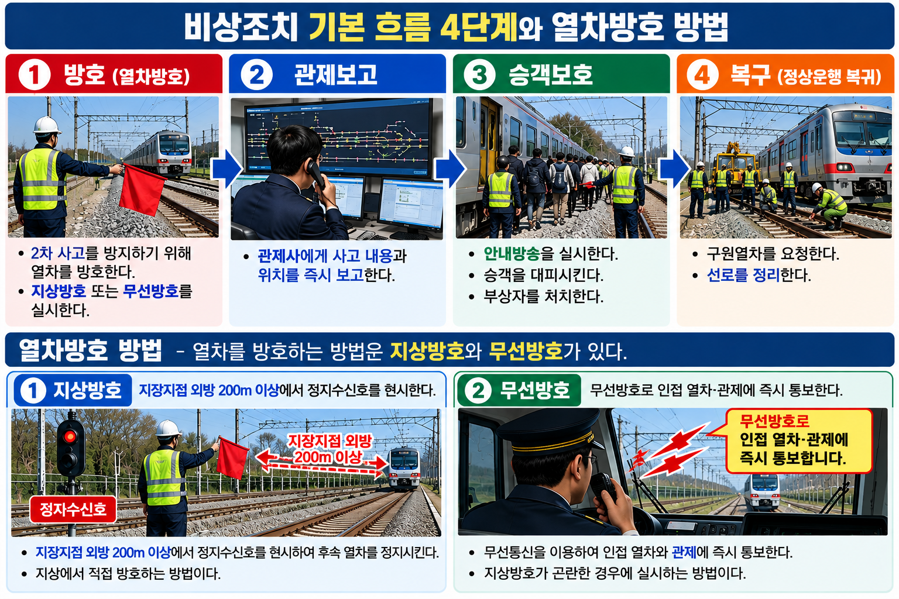
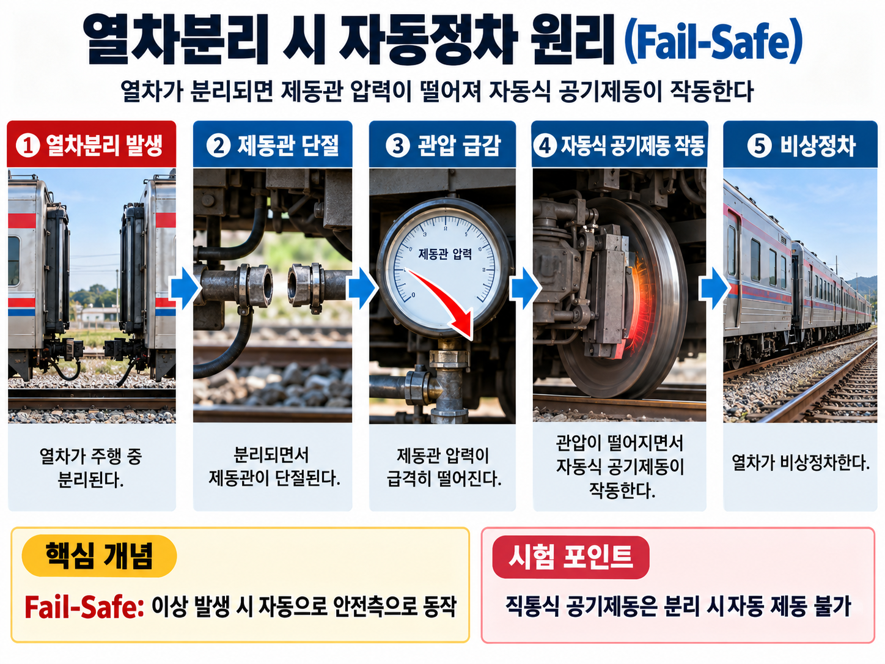

UNIT 08-05 · PART 08 열차제어 시스템
열차운행 안전
비상조치 기본 흐름 / 지상방호·무선방호 / 열차분리 자동정차 / 전차선 단선 / 구원운전·작업전호 / 화재 조치
PART 08
★★★
FINAL PUBLISH v1.1
§0 선행 용어
Fail-Safe (페일세이프)
시스템 고장·이상 시 반드시 안전한 쪽(정지·차단)으로 동작하도록 설계하는 원칙
→ 열차분리 자동정차, 전차선 활선 간주 모두 이 원칙의 적용
관압 (管壓) / 제동관
제동관(Brake Pipe) = 열차 전체를 연결하는 공기압력 배관. 이 관의 압력(관압)이 떨어지면 자동식 공기제동이 작동
→ 열차분리 시 관압 급감 → 자동 비상제동
작업전호 (作業傳號)
추진·퇴행 운전 시 맨 앞 차량의 직원이 기관사에게 정해진 방법으로 연락하는 신호 (법정 방법)
→ 철도차량운전규칙 제102조 명시
활선 (活線)
전류가 흐르고 있는 전선. 전차선이 끊어져 땅에 떨어져도 전원이 차단되지 않으면 활선 상태
→ 단전 확인 전까지 접근·접촉 절대 금지
지장지점 (支障地點)
사고·고장 등으로 열차 운행에 지장을 주는 지점 (열차 정차 위치 또는 선로 장애 지점)
→ 방호 조치 기준점: 지장지점 외방
구원운전 (救援運轉)
고장·사고 열차를 구원하기 위해 별도의 구원열차를 편성하여 운전하는 것
→ 관제 지시 + 연결 + 작업전호 후 운전
§1 관련 영상

V-Y-05 RELATED
GTX-A 대심도 터널 화재 대응훈련 (KRRI)
§2 개념 학습카드 (6개 · SOURCE: 3.html PART 8)
※ railway-king 대응 기출문항 없음 — 개념 학습 및 SOURCE 내 기출예시 중심으로 구성
C-36
비상조치 기본 흐름
★★
비상 발생 시 조치 순서 — 교재 기준
① 2차 사고 방지 — 방호 조치: 지장지점 외방 200m 이상에 정지수신호 제시, 무선통보
② 관제 보고 — 관제사에게 사고 내용·위치 즉시 보고
③ 승객 보호 — 안내방송, 대피 유도, 부상자 처치
④ 복구 — 구원열차 요청, 선로 정리
① 2차 사고 방지 — 방호 조치: 지장지점 외방 200m 이상에 정지수신호 제시, 무선통보
② 관제 보고 — 관제사에게 사고 내용·위치 즉시 보고
③ 승객 보호 — 안내방송, 대피 유도, 부상자 처치
④ 복구 — 구원열차 요청, 선로 정리
기본 흐름 암기: ①방호(200m 이상 정지수신호) → ②관제보고 → ③승객보호 → ④복구
취지
교재에서 제시하는 기본 흐름으로, 실제 사고 상황에서는 사고 유형·현장 상황·관제지시 등에 따라 필요한 조치를 병행할 수 있습니다.
📝 기출 예시
Q. 교재 기준으로 열차 사고 발생 시 비상조치 기본 흐름을 4단계로 쓰시오.
정답: ①2차사고 방지(방호) → ②관제보고 → ③승객보호 → ④복구
주의: "승객 보호를 가장 먼저"는 이 흐름과 다름 (교재 기준 순서는 ③)
C-37
지상방호 · 무선방호
★★★
| 방호 방법 | 수단 | 거리 / 시점 |
|---|---|---|
| 지상방호 | 지장지점 외방에 정지수신호 제시 | 지장지점 외방 200m 이상 앞 지점 (교재 기준) |
| 무선방호 | 무선방호 채널(비상채널)로 인접 열차·관제에 즉시 통보 | 즉시 (거리 무관) |
교재 기준: 200m 이상 — 교재의 복선 300m·단선 600m는 운영기관 내규·교재 참고수치
단선은 양방향 열차 공유 → 반대편까지 방호 필요. 200m 이상 기준을 우선 적용
📖 교재·내규 참고수치
· 복선: 300m 이상 이격 / 단선: 600m 이상 이격
⚠️ 시험에서는 200m 이상을 기준으로 답안 작성
⚠️ 시험에서는 200m 이상을 기준으로 답안 작성
이론 배경
지상방호의 핵심은 후방 열차가 지장지점에 도달하기 전에 정지수신호를 보고 멈출 수 있는 거리를 확보하는 것입니다. 무선방호는 지상방호를 보완하며 즉시·광범위 전파가 가능합니다.
📝 기출 예시
Q. 지상방호 조치 시 정지수신호 설치 위치 (교재 기준)?
정답: 지장지점 외방 200m 이상 앞 지점
오답함정: 교재의 복선 300m·단선 600m를 법령 기준으로 혼동
PRIMARY VIS

C-38
열차분리 자동정차 원리
★★
열차 분리 시 자동 비상제동 원리 (Fail-Safe)
열차 분리 → 제동관(브레이크 관) 압력(관압) 급감 → 자동식 공기제동 자동 작동 → 비상정차
※ 자동식 공기제동의 핵심 특성: "압력 저하 시 제동"
열차 분리 → 제동관(브레이크 관) 압력(관압) 급감 → 자동식 공기제동 자동 작동 → 비상정차
※ 자동식 공기제동의 핵심 특성: "압력 저하 시 제동"
Fail-Safe 원리
전기·신호가 끊겨도, 연결이 풀려도 반드시 안전 쪽(정지)으로 동작하는 설계 철학. 열차분리 → 관압 저하 → 자동 제동은 대표적인 Fail-Safe 사례입니다.
📝 기출 예시
Q. 열차 분리 시 자동으로 비상정차하는 제동 방식은?
정답: 자동식 공기제동 (제동관 압력 저하 시 자동 제동)
PRIMARY VIS

C-39
전차선 단선 시 취급 원칙
★★★
전차선 단선 시 — 무전압 확인 전까지 활선(活線)으로 간주
→ 단선된 전차선에 절대 접근·접촉 금지
→ 전원 차단 확인은 반드시 관제·전기담당자 확인 후 수행
→ 단선된 전차선에 절대 접근·접촉 금지
→ 전원 차단 확인은 반드시 관제·전기담당자 확인 후 수행
전차선이 끊어져 땅에 떨어져도 → 단전 확인 전까지 활선 취급! 맨손 접촉 절대 금지
왜 활선으로 간주하는가?
전차선은 고압 전류가 흐릅니다. 단선된 선이 땅에 닿아 있어도 전원이 차단되지 않는 한 그 선과 주변은 고압 위험 구역입니다. Fail-Safe 원칙 — 불확실하면 항상 위험한 쪽으로 간주합니다.
📝 기출 예시
Q. 전차선이 단선되어 선로에 떨어진 경우 기관사의 조치는?
정답: 무전압 확인 전까지 활선으로 간주하고 접근·접촉 금지, 관제 즉시 보고
오답함정: "끊어진 선이니 만져도 된다" — 절대 안 됨
PRIMARY VIS

C-40
구원운전 · 추진·퇴행 작업전호
★★
| 항목 | 핵심 내용 |
|---|---|
| 구원운전 | 고장열차 구원 시 — 관제 지시 방향 확인 + 구원열차와 연결 + 작업전호 확인 후 운전 |
| 추진운전 | 동력차가 뒤에서 밀며 운전 — 맨 앞 차량에 직원 탑승 + 기관사와 작업전호로 연락 |
| 퇴행운전 | 열차가 후방으로 이동 — 맨 앞 차량(후방 쪽)에 직원 탑승 + 기관사와 작업전호로 연락 |
추진·퇴행 운전 시 — 직원 없이 진행 ❌ → 반드시 맨 앞 차량에 직원 탑승 필요
추진·퇴행 시 맨 앞 차량 직원과 기관사 간 연락 방법 — 작업전호 (교재 기준)
이론 배경
추진·퇴행 운전에서 기관사는 진행 방향의 전방을 직접 볼 수 없습니다. 맨 앞 차량의 직원이 전방 감시 후 작업전호(정해진 신호)로 기관사에게 지시를 전달합니다. 단독 판단에 의한 충돌·탈선 사고를 방지하기 위한 안전 절차입니다.
📝 기출 예시
Q. 추진운전 시 맨 앞 차량에 탑승한 직원이 기관사와 연락하는 방법은?
정답: 작업전호
오답함정: "무선통신으로만 가능하다" — 작업전호가 규정된 방법
PRIMARY VIS

C-41
화재 발생 시 조치
★★★
열차 화재 시 조치 원칙
① 신속한 승객 대피 유도 (방송·안내)
② 관제 보고 (위치, 화재 규모)
③ 터널 내 화재: 가능하면 터널 밖으로 이동 후 대피 (정차 vs 탈출 판단)
단, 진행 불가능하면 터널 내 정차 후 비상구 이용
① 신속한 승객 대피 유도 (방송·안내)
② 관제 보고 (위치, 화재 규모)
③ 터널 내 화재: 가능하면 터널 밖으로 이동 후 대피 (정차 vs 탈출 판단)
단, 진행 불가능하면 터널 내 정차 후 비상구 이용
터널 내 화재 시 무조건 정차 ❌ → 탈출 가능 여부 판단 후 가능하면 터널 밖 이동이 우선
이론 배경
터널은 밀폐 공간이라 연기가 급속히 축적됩니다. 열차가 이동 가능하면 개방 공간으로 탈출하는 것이 터널 내 대피보다 훨씬 안전합니다.
📝 기출 예시
Q. 열차 내 화재 발생 시 터널 구간에서의 기본 조치 방향은?
정답: 열차 진행이 가능하면 터널 밖으로 이동 후 대피, 진행 불가 시 터널 내 정차 후 비상구 이용
오답함정: "터널에서 반드시 즉시 정차한다" — 이동 가능 여부 먼저 판단
PRIMARY VIS